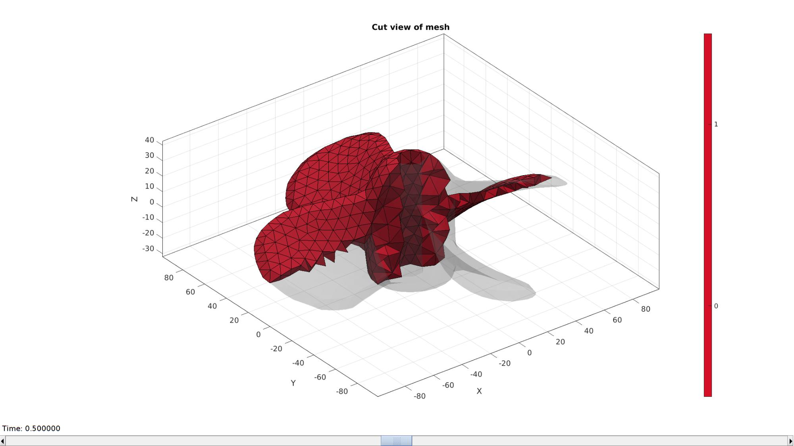
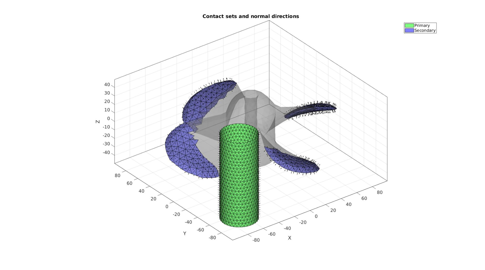
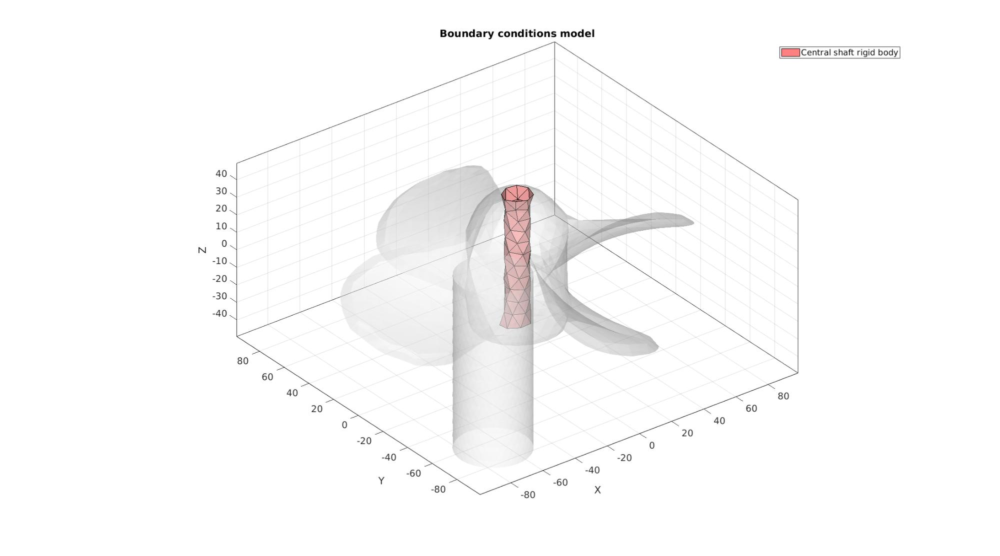
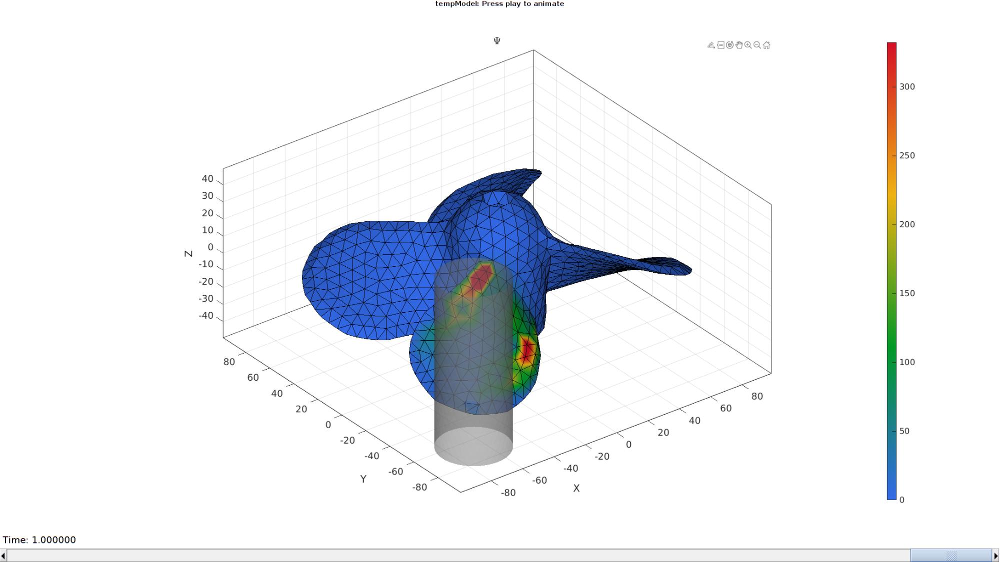

DEMO_febio_0040_propeller_contact
Below is a demonstration for:
- Building geometry for a slab with hexahedral elements, and a triangulated sphere.
- Defining the boundary conditions
- Coding the febio structure
- Running the model
- Importing and visualizing the displacement results
Contents
- Keywords
- Plot settings
- Control parameters
- Creating model geometry and mesh
- Creating triangulated bar mesh
- Mesh using tetrahedral elements
- Visualizing mesh using meshView, see also anim8
- Joining node sets
- Define contact surfaces
- Define boundary conditions
- Defining the FEBio input structure
- Quick viewing of the FEBio input file structure
- Exporting the FEBio input file
- Running the FEBio analysis
- Import FEBio results
Keywords
- febio_spec version 2.5
- febio, FEBio
- indentation
- contact, sliding, sticky, friction
- rigid body constraints
- hexahedral elements, hex8
- triangular elements, tri3
- slab, block, rectangular
- sphere
- static, solid
- hyperelastic, Ogden
- displacement logfile
- stress logfile
clear; close all; clc;
Plot settings
fontSize=15; faceAlpha1=0.8; faceAlpha2=0.3; markerSize=40; lineWidth=3;
Control parameters
% Path names defaultFolder = fileparts(fileparts(mfilename('fullpath'))); savePath=fullfile(defaultFolder,'data','temp'); % Defining file names febioFebFileNamePart='tempModel'; febioFebFileName=fullfile(savePath,[febioFebFileNamePart,'.feb']); %FEB file name febioLogFileName=fullfile(savePath,[febioFebFileNamePart,'.txt']); %FEBio log file name febioLogFileName_disp=[febioFebFileNamePart,'_disp_out.txt']; %Log file name for exporting displacement febioLogFileName_strainEnergy=[febioFebFileNamePart,'_energy_out.txt']; %Log file name for exporting strain energy density % Propeller % pointSpacing=6; % Bar barRadius=20; % Define prescribed rotation prescribedRotation_Z=pi/2; % Material parameter set c1=1e-3; %Shear-modulus-like parameter m1=2; %Material parameter setting degree of non-linearity k_factor=25; %Bulk modulus factor k=c1*k_factor; %Bulk modulus g1=1/2; %Viscoelastic QLV proportional coefficient t1=12; %Viscoelastic QLV time coefficient d=1e-9; %Density (not required for static analysis) % FEA control settings numTimeSteps=50; %Number of time steps desired max_refs=25; %Max reforms max_ups=0; %Set to zero to use full-Newton iterations opt_iter=12; %Optimum number of iterations max_retries=5; %Maximum number of retires dtmin=(1/numTimeSteps)/100; %Minimum time step size dtmax=(1/numTimeSteps); %Maximum time step size symmetric_stiffness=0; min_residual=1e-20; %Contact parameters contactPenalty=1; laugon=0; minaug=1; maxaug=10; fric_coeff=0.5;
Creating model geometry and mesh
% Import STL surface model fileName=fullfile(defaultFolder,'data','STL','propeller.stl'); [stlStruct] = import_STL(fileName); % Access the data from the STL struct F=stlStruct.solidFaces{1}; %Faces V=stlStruct.solidVertices{1}; %Vertices % Merging nodes [F,V]=mergeVertices(F,V); % Remeshing and labelling pointSpacing=10; [Fp,Vp,Cp]=triRemeshLabel(F,V,pointSpacing); % % Import STL surface model % fileName=fullfile(defaultFolder,'data','libSurf','propeller_3.mat'); % importedMesh=load(fileName); % Fp=importedMesh.F; % Vp=importedMesh.V; % Cp=importedMesh.C; % Shift around mean Vp=Vp-mean(Vp,1); w=max(abs(max(Vp,[],1)-min(Vp,[],1))); %Width measure pointSpacing=mean(patchEdgeLengths(Fp,Vp));
Creating triangulated bar mesh
optionStruct.cylRadius=barRadius; optionStruct.numRadial=round((2*pi*barRadius)/(pointSpacing/2)); optionStruct.cylHeight=w/2; % optionStruct.numHeight=optionStruct.numRadial; optionStruct.meshType='tri'; optionStruct.closeOpt=1; [Fc,Vc]=patchcylinder(optionStruct); %Shift bar Vc(:,1)=Vc(:,1)-w/3; Vc(:,2)=Vc(:,2)-w/3; center_of_mass=mean(Vc,1);
Plotting model boundary surfaces and a cut view
hFig=cFigure; title('Model boundary surfaces and labels','FontSize',fontSize); gpatch(Fp,Vp,Cp,'k',faceAlpha1); gpatch(Fc,Vc,'kw','k',faceAlpha1); colormap(gjet(250)); icolorbar; axisGeom(gca,fontSize); camlight headlight; drawnow;

Mesh using tetrahedral elements
stringOpt='-pq1.2AaY'; inputStruct.stringOpt=stringOpt; inputStruct.Faces=Fp; inputStruct.Nodes=Vp; inputStruct.holePoints=[]; inputStruct.faceBoundaryMarker=Cp; %Face boundary markers inputStruct.regionPoints=getInnerPoint(Fp,Vp); %region points inputStruct.regionA=tetVolMeanEst(Fp,Vp); %Volume for regular tets inputStruct.minRegionMarker=2; %Minimum region marker % Mesh model using tetrahedral elements using tetGen [meshOutput]=runTetGen(inputStruct); %Run tetGen % Access model element and patch data Fb=meshOutput.facesBoundary; Cb=meshOutput.boundaryMarker; V=meshOutput.nodes; CE=meshOutput.elementMaterialID; E=meshOutput.elements;
%%%%%%%%%%%%%%%%%%%%%%%%%%%%%%%%%%%%%%%%%%%%% --- TETGEN Tetrahedral meshing --- 04-Jun-2019 13:14:32 %%%%%%%%%%%%%%%%%%%%%%%%%%%%%%%%%%%%%%%%%%%%% --- Writing SMESH file --- 04-Jun-2019 13:14:32 ----> Adding node field ----> Adding facet field ----> Adding holes specification ----> Adding region specification --- Done --- 04-Jun-2019 13:14:32 --- Running TetGen to mesh input boundary--- 04-Jun-2019 13:14:32 Opening /mnt/data/MATLAB/GIBBON/data/temp/temp.smesh. Delaunizing vertices... Delaunay seconds: 0.005787 Creating surface mesh ... Surface mesh seconds: 0.001597 Recovering boundaries... Boundary recovery seconds: 0.002099 Removing exterior tetrahedra ... Spreading region attributes. Exterior tets removal seconds: 0.001373 Recovering Delaunayness... Delaunay recovery seconds: 0.001166 Refining mesh... Refinement seconds: 0.011901 Optimizing mesh... Optimization seconds: 0.001079 Writing /mnt/data/MATLAB/GIBBON/data/temp/temp.1.node. Writing /mnt/data/MATLAB/GIBBON/data/temp/temp.1.ele. Writing /mnt/data/MATLAB/GIBBON/data/temp/temp.1.face. Writing /mnt/data/MATLAB/GIBBON/data/temp/temp.1.edge. Output seconds: 0.012725 Total running seconds: 0.037839 Statistics: Input points: 1073 Input facets: 2146 Input segments: 3219 Input holes: 0 Input regions: 1 Mesh points: 1526 Mesh tetrahedra: 5871 Mesh faces: 12815 Mesh faces on exterior boundary: 2146 Mesh faces on input facets: 2146 Mesh edges on input segments: 3219 Steiner points inside domain: 453 --- Done --- 04-Jun-2019 13:14:32 %%%%%%%%%%%%%%%%%%%%%%%%%%%%%%%%%%%%%%%%%%%%% --- Importing TetGen files --- 04-Jun-2019 13:14:32 --- Done --- 04-Jun-2019 13:14:32
Visualizing mesh using meshView, see also anim8
meshView(meshOutput);
Joining node sets
Fc=Fc+size(V,1); %Fixed element indices V=[V;Vc;]; %Combined node sets
Plotting joined geometry
cFigure; title('Joined node sets','FontSize',fontSize); hold on; gpatch(Fb,V,Cp,'k',faceAlpha1); gpatch(Fc,V,'kw','k',faceAlpha1); colormap(gjet(6)); icolorbar; axisGeom(gca,fontSize); camlight headlight; drawnow;

Define contact surfaces
% The rigid master surface of the sphere F_contact_master=Fc; % The deformable slave surface of the slab F_contact_slave=fliplr(Fb(ismember(Cb,[1:7]),:)); % Plotting surface models cFigure; hold on; title('Contact sets and normal directions','FontSize',fontSize); gpatch(Fb,V,'kw','none',faceAlpha2); hl(1)=gpatch(F_contact_master,V,'gw','k',1); patchNormPlot(F_contact_master,V); hl(2)=gpatch(F_contact_slave,V,'bw','k',1); patchNormPlot(F_contact_slave,V); legend(hl,{'Master','Slave'}); axisGeom(gca,fontSize); camlight headlight; drawnow;
Define boundary conditions
%Supported nodes
F_shaft=Fb(Cb==11,:);
bcSupportList=unique(F_shaft);
Visualize BC's
hf=cFigure; title('Boundary conditions model','FontSize',fontSize); hold on; gpatch(Fb,V,'kw','none',faceAlpha2); gpatch(Fb(Cb==11,:),V,'rw','k',1); clear hl; hl(1)=plotV(V(bcSupportList,:),'k.','MarkerSize',markerSize); legend(hl,{'BC support'}); axisGeom(gca,fontSize); camlight headlight; drawnow;
Defining the FEBio input structure
See also febioStructTemplate and febioStruct2xml and the FEBio user manual.
%Get a template with default settings [febio_spec]=febioStructTemplate; %febio_spec version febio_spec.ATTR.version='2.5'; %Module section febio_spec.Module.ATTR.type='solid'; %Control section febio_spec.Control.analysis.ATTR.type='static'; febio_spec.Control.time_steps=numTimeSteps; febio_spec.Control.step_size=1/numTimeSteps; febio_spec.Control.time_stepper.dtmin=dtmin; febio_spec.Control.time_stepper.dtmax=dtmax; febio_spec.Control.time_stepper.max_retries=max_retries; febio_spec.Control.time_stepper.opt_iter=opt_iter; febio_spec.Control.max_refs=max_refs; febio_spec.Control.max_ups=max_ups; febio_spec.Control.symmetric_stiffness=symmetric_stiffness; febio_spec.Control.min_residual=min_residual; %Material section febio_spec.Material.material{1}.ATTR.type='Ogden'; febio_spec.Material.material{1}.ATTR.id=1; febio_spec.Material.material{1}.c1=c1; febio_spec.Material.material{1}.m1=m1; febio_spec.Material.material{1}.c2=c1; febio_spec.Material.material{1}.m2=-m1; febio_spec.Material.material{1}.k=k; % %Viscoelastic part % febio_spec.Material.material{1}.ATTR.type='uncoupled viscoelastic'; % febio_spec.Material.material{1}.ATTR.Name='Block_material'; % febio_spec.Material.material{1}.ATTR.id=1; % febio_spec.Material.material{1}.g1=g1; % febio_spec.Material.material{1}.t1=t1; % febio_spec.Material.material{1}.density=d; % % %Elastic part % febio_spec.Material.material{1}.elastic{1}.ATTR.type='Ogden'; % febio_spec.Material.material{1}.elastic{1}.c1=c1; % febio_spec.Material.material{1}.elastic{1}.m1=m1; % febio_spec.Material.material{1}.elastic{1}.c2=c1; % febio_spec.Material.material{1}.elastic{1}.m2=-m1; % febio_spec.Material.material{1}.elastic{1}.k=k; % febio_spec.Material.material{1}.elastic{1}.density=d; febio_spec.Material.material{2}.ATTR.type='rigid body'; febio_spec.Material.material{2}.ATTR.id=2; febio_spec.Material.material{2}.density=1e-9; febio_spec.Material.material{2}.center_of_mass=mean(V(bcSupportList,:),1); febio_spec.Material.material{3}.ATTR.type='rigid body'; febio_spec.Material.material{3}.ATTR.id=3; febio_spec.Material.material{3}.density=1e-9; febio_spec.Material.material{3}.center_of_mass=mean(Vc,1); %Geometry section % -> Nodes febio_spec.Geometry.Nodes{1}.ATTR.name='nodeSet_all'; %The node set name febio_spec.Geometry.Nodes{1}.node.ATTR.id=(1:size(V,1))'; %The node id's febio_spec.Geometry.Nodes{1}.node.VAL=V; %The nodel coordinates % -> Elements febio_spec.Geometry.Elements{1}.ATTR.type='tet4'; %Element type of this set febio_spec.Geometry.Elements{1}.ATTR.mat=1; %material index for this set febio_spec.Geometry.Elements{1}.ATTR.name='Propeller'; %Name of the element set febio_spec.Geometry.Elements{1}.elem.ATTR.id=(1:1:size(E,1))'; %Element id's febio_spec.Geometry.Elements{1}.elem.VAL=E; febio_spec.Geometry.Elements{2}.ATTR.type='tri3'; %Element type of this set febio_spec.Geometry.Elements{2}.ATTR.mat=2; %material index for this set febio_spec.Geometry.Elements{2}.ATTR.name='Propeller_shaft'; %Name of the element set febio_spec.Geometry.Elements{2}.elem.ATTR.id=size(E,1)+(1:1:size(F_shaft,1))'; %Element id's febio_spec.Geometry.Elements{2}.elem.VAL=F_shaft; febio_spec.Geometry.Elements{3}.ATTR.type='tri3'; %Element type of this set febio_spec.Geometry.Elements{3}.ATTR.mat=3; %material index for this set febio_spec.Geometry.Elements{3}.ATTR.name='Bar'; %Name of the element set febio_spec.Geometry.Elements{3}.elem.ATTR.id=size(F_shaft,1)+size(E,1)+(1:1:size(Fc,1))'; %Element id's febio_spec.Geometry.Elements{3}.elem.VAL=Fc; % -> NodeSets febio_spec.Geometry.NodeSet{1}.ATTR.name='bcSupportList'; febio_spec.Geometry.NodeSet{1}.node.ATTR.id=bcSupportList(:); % -> Surfaces febio_spec.Geometry.Surface{1}.ATTR.name='contact_master'; febio_spec.Geometry.Surface{1}.tri3.ATTR.lid=(1:1:size(F_contact_master,1))'; febio_spec.Geometry.Surface{1}.tri3.VAL=F_contact_master; febio_spec.Geometry.Surface{2}.ATTR.name='contact_slave'; febio_spec.Geometry.Surface{2}.tri3.ATTR.lid=(1:1:size(F_contact_slave,1))'; febio_spec.Geometry.Surface{2}.tri3.VAL=F_contact_slave; % -> Surface pairs febio_spec.Geometry.SurfacePair{1}.ATTR.name='Contact1'; febio_spec.Geometry.SurfacePair{1}.master.ATTR.surface=febio_spec.Geometry.Surface{1}.ATTR.name; febio_spec.Geometry.SurfacePair{1}.slave.ATTR.surface=febio_spec.Geometry.Surface{2}.ATTR.name; %Boundary condition section % -> Fix boundary conditions febio_spec.Boundary.fix{1}.ATTR.bc='x'; febio_spec.Boundary.fix{1}.ATTR.node_set=febio_spec.Geometry.NodeSet{1}.ATTR.name; febio_spec.Boundary.fix{2}.ATTR.bc='y'; febio_spec.Boundary.fix{2}.ATTR.node_set=febio_spec.Geometry.NodeSet{1}.ATTR.name; febio_spec.Boundary.fix{3}.ATTR.bc='z'; febio_spec.Boundary.fix{3}.ATTR.node_set=febio_spec.Geometry.NodeSet{1}.ATTR.name; % -> Prescribed boundary conditions on the rigid body febio_spec.Boundary.rigid_body{1}.ATTR.mat=3; febio_spec.Boundary.rigid_body{1}.fixed{1}.ATTR.bc='x'; febio_spec.Boundary.rigid_body{1}.fixed{2}.ATTR.bc='y'; febio_spec.Boundary.rigid_body{1}.fixed{3}.ATTR.bc='z'; febio_spec.Boundary.rigid_body{1}.fixed{4}.ATTR.bc='Rx'; febio_spec.Boundary.rigid_body{1}.fixed{5}.ATTR.bc='Ry'; febio_spec.Boundary.rigid_body{1}.fixed{6}.ATTR.bc='Rz'; febio_spec.Boundary.rigid_body{2}.ATTR.mat=2; febio_spec.Boundary.rigid_body{2}.fixed{1}.ATTR.bc='x'; febio_spec.Boundary.rigid_body{2}.fixed{2}.ATTR.bc='y'; febio_spec.Boundary.rigid_body{2}.fixed{3}.ATTR.bc='z'; febio_spec.Boundary.rigid_body{2}.fixed{4}.ATTR.bc='Rx'; febio_spec.Boundary.rigid_body{2}.fixed{5}.ATTR.bc='Ry'; % febio_spec.Boundary.rigid_body{2}.fixed{6}.ATTR.bc='Rz'; febio_spec.Boundary.rigid_body{2}.prescribed{1}.ATTR.bc='Rz'; febio_spec.Boundary.rigid_body{2}.prescribed{1}.ATTR.lc=1; febio_spec.Boundary.rigid_body{2}.prescribed{1}.VAL=prescribedRotation_Z; %Contact section febio_spec.Contact.contact{1}.ATTR.surface_pair=febio_spec.Geometry.SurfacePair{1}.ATTR.name; febio_spec.Contact.contact{1}.ATTR.type='sliding-elastic'; febio_spec.Contact.contact{1}.two_pass=1; febio_spec.Contact.contact{1}.laugon=laugon; febio_spec.Contact.contact{1}.tolerance=0.2; febio_spec.Contact.contact{1}.gaptol=0; febio_spec.Contact.contact{1}.minaug=minaug; febio_spec.Contact.contact{1}.maxaug=maxaug; febio_spec.Contact.contact{1}.search_tol=0.01; febio_spec.Contact.contact{1}.search_radius=0.1; febio_spec.Contact.contact{1}.symmetric_stiffness=0; febio_spec.Contact.contact{1}.auto_penalty=1; febio_spec.Contact.contact{1}.penalty=contactPenalty; febio_spec.Contact.contact{1}.fric_coeff=fric_coeff; %LoadData section febio_spec.LoadData.loadcurve{1}.ATTR.id=1; febio_spec.LoadData.loadcurve{1}.ATTR.type='linear'; febio_spec.LoadData.loadcurve{1}.point.VAL=[0 0; 1 1]; %Output section % -> log file febio_spec.Output.logfile.ATTR.file=febioLogFileName; febio_spec.Output.logfile.node_data{1}.ATTR.file=febioLogFileName_disp; febio_spec.Output.logfile.node_data{1}.ATTR.data='ux;uy;uz'; febio_spec.Output.logfile.node_data{1}.ATTR.delim=','; febio_spec.Output.logfile.node_data{1}.VAL=1:size(V,1); febio_spec.Output.logfile.element_data{1}.ATTR.file=febioLogFileName_strainEnergy; febio_spec.Output.logfile.element_data{1}.ATTR.data='sed'; febio_spec.Output.logfile.element_data{1}.ATTR.delim=','; febio_spec.Output.logfile.element_data{1}.VAL=1:size(E,1);
Quick viewing of the FEBio input file structure
The febView function can be used to view the xml structure in a MATLAB figure window.
febView(febio_spec); %Viewing the febio file
Exporting the FEBio input file
Exporting the febio_spec structure to an FEBio input file is done using the febioStruct2xml function.
febioStruct2xml(febio_spec,febioFebFileName); %Exporting to file and domNode
Running the FEBio analysis
To run the analysis defined by the created FEBio input file the runMonitorFEBio function is used. The input for this function is a structure defining job settings e.g. the FEBio input file name. The optional output runFlag informs the user if the analysis was run succesfully.
febioAnalysis.run_filename=febioFebFileName; %The input file name febioAnalysis.run_logname=febioLogFileName; %The name for the log file febioAnalysis.disp_on=1; %Display information on the command window febioAnalysis.disp_log_on=1; %Display convergence information in the command window febioAnalysis.runMode='external';%'internal'; febioAnalysis.t_check=0.25; %Time for checking log file (dont set too small) febioAnalysis.maxtpi=1e99; %Max analysis time febioAnalysis.maxLogCheckTime=3; %Max log file checking time [runFlag]=runMonitorFEBio(febioAnalysis);%START FEBio NOW!!!!!!!!
%%%%%%%%%%%%%%%%%%%%%%%%%%%%%%%%%%%%%%%%%%%%% --- STARTING FEBIO JOB --- 04-Jun-2019 13:14:39 Waiting for log file... Proceeding to check log file...04-Jun-2019 13:14:40 ------- converged at time : 0.02 ------- converged at time : 0.04 ------- converged at time : 0.06 ------- converged at time : 0.08 ------- converged at time : 0.1 ------- converged at time : 0.12 ------- converged at time : 0.14 ------- converged at time : 0.16 ------- converged at time : 0.18 ------- converged at time : 0.2 ------- converged at time : 0.218531 ------- converged at time : 0.237356 ------- converged at time : 0.256416 ------- converged at time : 0.275664 ------- converged at time : 0.295063 ------- converged at time : 0.314581 ------- converged at time : 0.3341 ------- converged at time : 0.350446 ------- converged at time : 0.364676 ------- converged at time : 0.376664 ------- converged at time : 0.390255 ------- converged at time : 0.405127 ------- converged at time : 0.418911 ------- converged at time : 0.433938 ------- converged at time : 0.448965 ------- converged at time : 0.464762 ------- converged at time : 0.481399 ------- converged at time : 0.498709 ------- converged at time : 0.516556 ------- converged at time : 0.534835 ------- converged at time : 0.553457 ------- converged at time : 0.572355 ------- converged at time : 0.591474 ------- converged at time : 0.610769 ------- converged at time : 0.630172 ------- converged at time : 0.649696 ------- converged at time : 0.669292 ------- converged at time : 0.68897 ------- converged at time : 0.708697 ------- converged at time : 0.728479 ------- converged at time : 0.748305 ------- converged at time : 0.76736 ------- converged at time : 0.786605 ------- converged at time : 0.806 ------- converged at time : 0.825517 ------- converged at time : 0.842994 ------- converged at time : 0.860471 ------- converged at time : 0.878339 ------- converged at time : 0.896633 ------- converged at time : 0.914927 ------- converged at time : 0.933383 ------- converged at time : 0.946493 ------- converged at time : 0.960668 ------- converged at time : 0.969428 ------- converged at time : 0.9786 ------- converged at time : 0.989939 ------- converged at time : 0.99899 ------- converged at time : 1 --- Done --- 04-Jun-2019 13:15:45


Import FEBio results
if runFlag==1 %i.e. a succesful run
% Importing nodal displacements from a log file [time_mat, N_disp_mat,~]=importFEBio_logfile(fullfile(savePath,febioLogFileName_disp)); %Nodal displacements time_mat=[0; time_mat(:)]; %Time N_disp_mat=N_disp_mat(:,2:end,:); sizImport=size(N_disp_mat); sizImport(3)=sizImport(3)+1; N_disp_mat_n=zeros(sizImport); N_disp_mat_n(:,:,2:end)=N_disp_mat; N_disp_mat=N_disp_mat_n; DN=N_disp_mat(:,:,end); DN_magnitude=sqrt(sum(DN.^2,2)); V_def=V+DN; V_DEF=N_disp_mat+repmat(V,[1 1 size(N_disp_mat,3)]); X_DEF=V_DEF(:,1,:); Y_DEF=V_DEF(:,2,:); Z_DEF=V_DEF(:,3,:); % Importing element strain energies from a log file [~,E_energy,~]=importFEBio_logfile(fullfile(savePath,febioLogFileName_strainEnergy)); %Element stresses %Remove nodal index column E_energy=E_energy(:,2:end,:); %Add initial state i.e. zero displacement sizImport=size(E_energy); sizImport(3)=sizImport(3)+1; E_energy_mat_n=zeros(sizImport); E_energy_mat_n(:,:,2:end)=E_energy; E_energy=E_energy_mat_n; C=faceToVertexMeasure(E,V,E_energy(:,:,end));
Plotting the simulated results using anim8 to visualize and animate deformations
% Create basic view and store graphics handle to initiate animation hf=cFigure; %Open figure gtitle([febioFebFileNamePart,': Press play to animate']); hp1=gpatch(Fb,V_def,C,'k',1); %Add graphics object to animate hp1.FaceColor='interp'; hp2=gpatch(Fc,V_def,'kw','none',0.5); %Add graphics object to animate axisGeom(gca,fontSize); colormap(gjet(250)); colorbar; caxis([0 max(E_energy(:))/40]); axis([min(X_DEF(:)) max(X_DEF(:)) min(Y_DEF(:)) max(Y_DEF(:)) min(Z_DEF(:)) max(Z_DEF(:))]); camlight headlight; % Set up animation features animStruct.Time=time_mat; %The time vector for qt=1:1:size(N_disp_mat,3) %Loop over time increments DN=N_disp_mat(:,:,qt); %Current displacement DN_magnitude=sqrt(sum(DN.^2,2)); %Current displacement magnitude V_def=V+DN; %Current nodal coordinates C=faceToVertexMeasure(E,V,E_energy(:,:,qt)); %Set entries in animation structure animStruct.Handles{qt}=[hp1 hp1 hp2]; %Handles of objects to animate animStruct.Props{qt}={'Vertices','CData','Vertices'}; %Properties of objects to animate animStruct.Set{qt}={V_def,C,V_def}; %Property values for to set in order to animate end anim8(hf,animStruct); %Initiate animation feature drawnow;

end

GIBBON www.gibboncode.org
Kevin Mattheus Moerman, gibbon.toolbox@gmail.com
GIBBON footer text
License: https://github.com/gibbonCode/GIBBON/blob/master/LICENSE
GIBBON: The Geometry and Image-based Bioengineering add-On. A toolbox for image segmentation, image-based modeling, meshing, and finite element analysis.
Copyright (C) 2019 Kevin Mattheus Moerman
This program is free software: you can redistribute it and/or modify it under the terms of the GNU General Public License as published by the Free Software Foundation, either version 3 of the License, or (at your option) any later version.
This program is distributed in the hope that it will be useful, but WITHOUT ANY WARRANTY; without even the implied warranty of MERCHANTABILITY or FITNESS FOR A PARTICULAR PURPOSE. See the GNU General Public License for more details.
You should have received a copy of the GNU General Public License along with this program. If not, see http://www.gnu.org/licenses/.